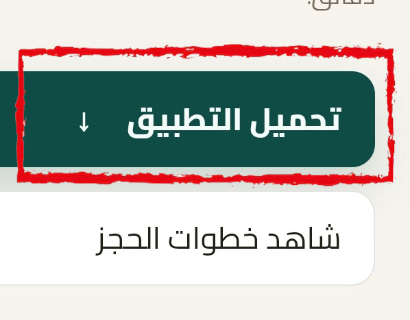
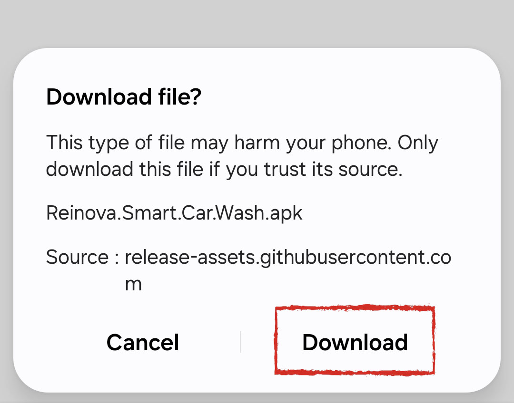
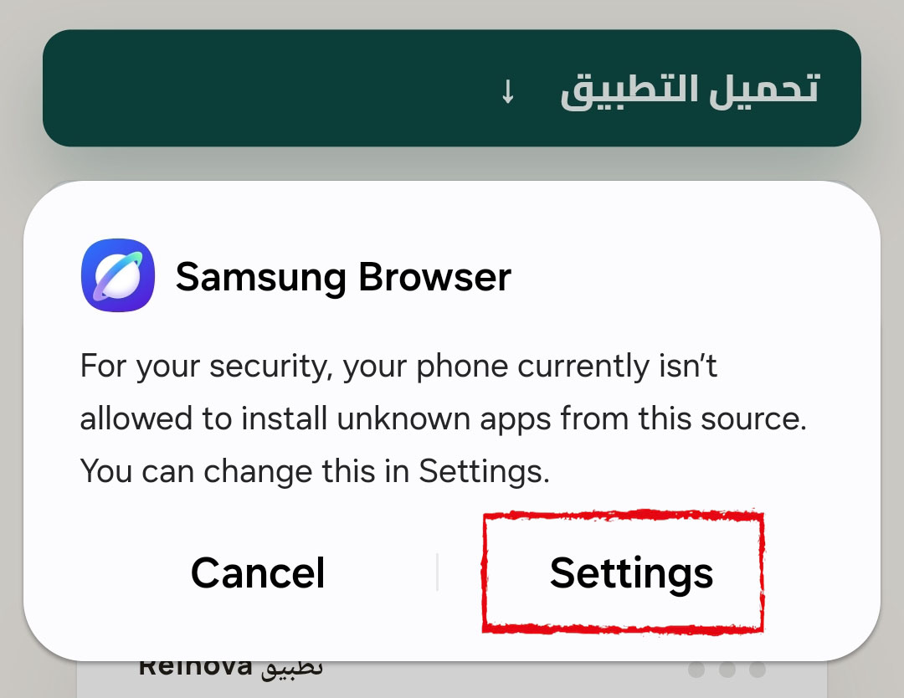
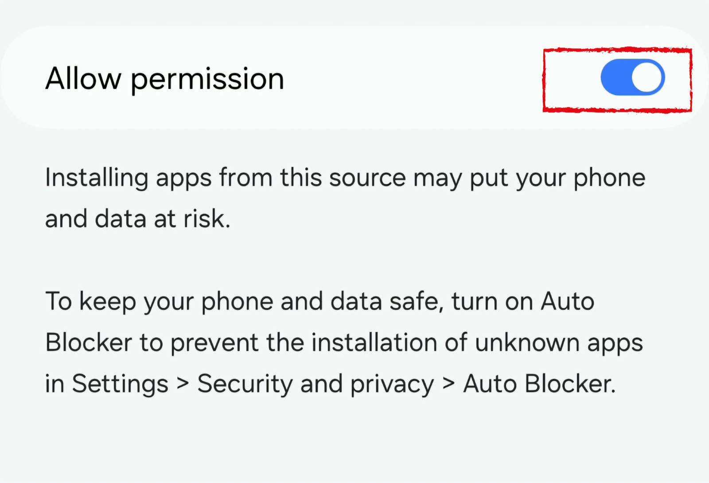

غسيل خارجي
110ج.م
تنظيف الهيكل والزجاج والكاوتش من بره.
غسيل سيارات شبه جاف داخلي وخارجي، بخدمة متنقلة تصل إليك في موقعك. سجّل، اختار الباقة أو الاشتراك المناسب، وحدد ميعادك في دقائق.
تجربة غسيل سيارات شبه جاف متنقلة تجمع بين الراحة والتنظيم وسهولة الحجز.
تختار الخدمة، تضيف سيارتك، تحدد الموعد والموقع، وفريقنا يأتي إليك بكل أدواته ومنتجاته الخاصة — من غير ما تتحرك من مكانك.
لو التطبيق نزل من المتصفح مباشرة (مش من متجر تطبيقات)، اتبع الخطوات البسيطة دي عشان تثبّته.

دوس على زرار "تحميل التطبيق" فوق.

هيظهرلك تنبيه من المتصفح، دوس "Download" لتأكيد التحميل.

لو المتصفح وقف التثبيت، دوس "Settings" زي الصورة. لو التحميل من المتصفح مفعّل عندك أصلاً، تقدر تثبّت التطبيق على طول من غير الخطوة دي.

فعّل خيار "Allow permission"، وبعدها ثبّت التطبيق واعمل حسابك واستمتع بالخدمة.
ببياناتك الأساسية.
ومنها رقم اللوحة.
أو الباقة المناسبة.
والموقع المطلوب.
وفريقنا يوصلك.
احجز غسلة واحدة وقت ما تحتاج، أو اشترك في باقة شهرية توفرلك أكتر.
تنظيف الهيكل والزجاج والكاوتش من بره.
داخلي وخارجي معًا، تنظيف كامل من جوه ومن بره — الخيار الأساسي للعناية الدورية.
مواد متخصصة بتشيل البقع الصعبة والوسخ المتراكم اللي مش بيطلع بالأساليب العادية.
4 غسلات خارجية + 1 غسيل داخلي مجانًا
8 غسلات خارجية + 2 غسيل داخلي مجانًا
12 غسلة خارجية + 2 غسيل داخلي مجانًا
غسيل خارجي يومي + 4 غسلات داخلية مجانًا
ست مميزات بتفرق في تجربة الغسيل بتاعتك.
عناية بالسيارة بدون الاعتماد على أسلوب الغسيل المائي التقليدي.
لا تحتاج للذهاب إلى المغسلة، الخدمة تأتي إلى الموقع الذي تحدده.
خدمة متكاملة للعناية بالمظهر الخارجي ونظافة المقصورة الداخلية.
منتجات مخصصة للعناية بالسيارات ضمن تجربة رينوفا.
اختيارات مناسبة لمن يريد تنظيم غسيل سيارته بشكل متكرر.
اختيار الخدمة والموعد والموقع من خلال خطوات واضحة داخل التطبيق.
الفرق مش بس في كمية المياه، لكن في طريقة التعامل مع دهان سيارتك أثناء التنظيف.
كمية مياه كبيرة مع الشطف والتنظيف.
يختلف حسب المغسلة، وقد تُستخدم منظفات غير مخصصة للسيارات.
بعض المنظفات القوية قد تؤثر على طبقات الحماية مثل الشمع مع الاستخدام المتكرر.
يعتمد على طريقة الغسيل؛ الفرك على الأوساخ والرمل قد يسبب خدوشًا دقيقة.
استخدام كمية محدودة من المياه مقارنة بالغسيل التقليدي.
منتجات مخصصة للسيارات مصممة للتنظيف والعناية بالسطح.
منتجات مناسبة للسيارات تساعد على الحفاظ على مظهر السطح وطبقاته الواقية.
استخدام منتجات مناسبة وفوط Microfiber ناعمة يساعد على تقليل الاحتكاك أثناء التنظيف.
كل طريقة بتتعامل مع الأوساخ والدهان بشكل مختلف.
سجّل حسابك، أضف سيارتك، اختار الغسلة أو الباقة اللي تناسبك، وحدد الموعد والموقع.
أيوه، هي خدمة متنقلة بتوصل للموقع اللي تحدده وقت الحجز.
الباقة عدد غسلات ثابت شهريًا بسعر واحد، والاشتراك بيدّيك مرونة تحدد فيها ميعاد كل غسلة بنفسك على مدار الشهر.
لأ، تضيفها مرة واحدة عند التسجيل وتفضل متاحة لأي حجز جديد.
الشامل للعناية الدورية الداخلية والخارجية، والكيماوي لإزالة البقع الصعبة والوسخ المتراكم اللي مش بيطلع بالأساليب العادية.
لأ، بيعتمد على مواد ومنتجات مخصصة للعناية بالسيارة من غير الاعتماد على أسلوب الغسيل المائي التقليدي.
حمّل تطبيق Reinova وابدأ أول حجز لك.